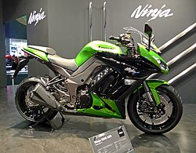
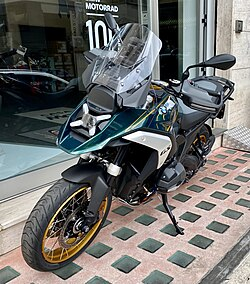
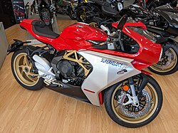
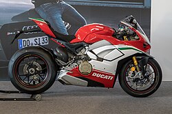

The Yamaha YZF-R6 is a sport bike,[1] produced by Yamaha as a 600 class from 1999 to 2020. From 2021, production availability is limited to a non-homologated race-only specification in most global markets,[2][3] causing race organizers to realign their engine eligibility criteria to encourage other manufacturers having larger than 600 cc displacements to enter road-race competition from 2022.[4] Race organizers wanted to provide scope for alternative machinery to move away from established tradition of the Yamaha R6 being the dominant marque in Supersport racing.[5] A similar motorcycle currently in production is the Yamaha YZF-R9. This motorcycle is widely considered to be the R6's successor but this has never been officially stated by Yamaha.[6]
Kawasaki Ninja 1000

The Kawasaki Ninja 1000 SX (sold in some markets as the Ninja 1000, Z1000S or Z1000SX)[7] is a motorcycle in the Ninja series from the Japanese manufacturer Kawasaki sold since 2011. Other than its name, it is unrelated to the Ninja 1000R produced from 1986–89, or to other Ninja motorcycles.
It is generally characterized as a fully faired sibling of the Z1000 streetfighter, sharing the same 1,043cc liquid-cooled, electronic fuel-injected, 16-valve four-stroke Transverse engine and aluminum twin-tube backbone frame,[8] but with ergonomics, storage, larger fuel tank and other design elements more oriented to the sport touring market.[9] The Ninja 1000 is also fitted with an electronic speed limiter,[10] not because it is capable of exceeding the 300 km/h (186 mph) agreed to in the gentlemen's agreement but apparently to keep its top speed the same as the unfaired and unlimited Z1000.[6]
BMW R1300GS

The BMW R1300GS is an adventure touring motorcycle announced for the 2024 model year by BMW Motorrad, following the BMW R1250GS.[1] The engine and transmission were redesigned, as was the frame, eliminating the full trellis frame of the earlier model. Both changes contributed to a weight of 237kg, 12kg lighter than the previous model. It also eliminated the asymmetrical headlights in earlier generations of the GS series.[2
MV Agusta Superveloce

Based on the F3 800, the Superveloce was first exhibited as a concept at the 2018 EICMA Show in Milan where it was awarded "Most Beautiful Bike of the Show”. MV Agusta were invited to exhibit the machine at the Concorso d'Eleganza Villa d'Este,[5] where it won first prize in the “Concept Bike: New Design and Prototype category presented by Independent Manufacturers and Designers” class.[2]
Using the social network platform Instagram, MV Agusta announced on 19 May 2019 that the Superveloce would go into production in 2020.[6] On 29 May they announced that pre-orders were being taken for the 300 Serie Oro production run,[7] and by 26 June all 300, had been reserved.[8] The first units were expected to go into production in March 2020.[9] At the November 2019 EICMA Show two versions of the machine were unveiled: the limited edition Superveloce 800 Serie Oro which was almost indistinguishable from the concept bike and the full production Superveloce 800.[10] MV Agusta also announced that production of the Superveloce had begun.[11]
Ducati Panigale V4

The Ducati Panigale V4 is a sport bike with a 1,103 cc (67.3 cu in) desmodromic 90° V4 engine introduced by Ducati in 2018 as the successor to the V-twin engined 1299. A smaller engine displacement version complies with the Superbike category competition regulations which state "Over 750 cc up to 1000 cc" for three and four cylinder 4-stroke engines.[3]
The name "Panigale" comes from the small manufacturing town of Borgo Panigale.[4] The Panigale V4 uses the new Desmosedici Stradale V4 engine, derived from the Desmosedici MotoGP racing engine.